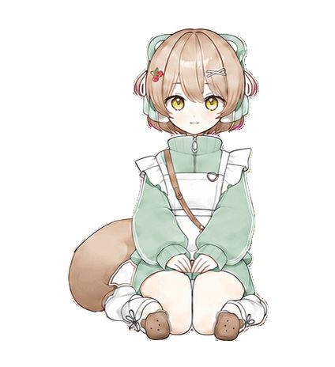

BUZZI · MIDNIGHT ROOM
● UNKNOWN VIEWERS DETECTED
구독 방송
평범한 심야 방송에 정체불명의 시청자들이 접속했습니다. 플레이할 모드를 선택하세요.
기록 확인
이상 징후 탐색
강제 퇴장
이어폰을 착용하면 더 몰입해서 즐길 수 있습니다.
https://www.cizzk.never.co/buzzi/live/

LIVE
124
버찌
저쳇 ON 🌙
연결 안정
SIGNAL CONTAMINATION
20.0s
스테이지
1
체력
3
모드
∞
남은 이상 시청자
1
점수
0000
메시지를 입력한 뒤 엔터를 누르면 전송됩니다.
VIEWER LOG
최근 채팅 기록을 확인하고 판단하세요.
STAGE 01 CLEAR
✓
이상 시청자 차단
- 차단
- 0
- 놓침
- 0
- 오판
- 0
- 체력
- 3
DON'T LOOK AWAY
DAY 01 · BROADCAST CLOSED
1일차 방송 결과
- 이상 차단
- 0
- 놓침
- 0
- 오판
- 0
- 연결 실패
- 0
- 남은 체력
- 3
CONNECTION CLOSED
방송 종료
0000점도달 스테이지 1